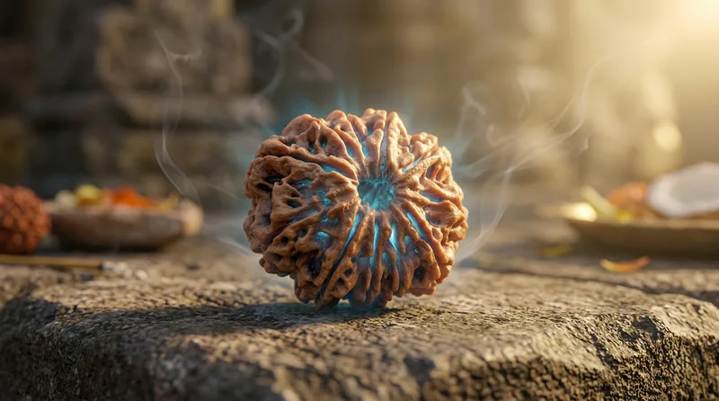

Enlightenment
1 Mukhi: The Source
Attaining the highest consciousness. The singular path to ultimate truth.
Explore WisdomDirectly sourced from the pristine, high-altitude groves of Arun Valley, Nepal, each sacred bead is hand-selected and Vedic-consecrated to carry authentic spiritual energy for your life's path.
Explore the Collection →According to ancient Vedic scriptures, the Rudraksha seed is born of the infinite compassion of Lord Shiva. After eons of deep meditation for the welfare of all living beings, Shiva opened His eyes, and tears of pure bliss and empathy fell upon the earth. Where these sacred droplets touched the soil, the first Rudraksha trees arose.
These divine seeds are not mere ornaments; they are highly resonant spiritual instruments. For centuries, sages, yogis, and seekers have worn them close to the heart to align their personal energies, quiet the mind, and connect with the eternal presence of the cosmos.
"रुद्राक्ष केवल एक बीज नहीं, शिव की करुणा का स्वरूप है।"
Literally translating to the "Tear of Lord Shiva," the Rudraksha is a physical manifestation of divine grace. It represents a spiritual bridge between earthly consciousness and the supreme cosmic energy.
The high-altitude environments of the Nepalese Himalayas—specifically the pristine groves of the Arun Valley—provide the ultimate fertile ground for Rudraksha trees. Fed by glacial waters, mineral-rich soil, and pure mountain air, the seeds grow with distinct, deep mukhi lines, a robust structural composition, and a unique, highly receptive electromagnetic field.
Vedic traditions and modern energetic assessments agree: beads sourced directly from these high-altitude sacred forests carry a significantly higher vibrational frequency and divine resonance than those grown elsewhere.
"यहाँ का पानी, हवा, मिट्टी, धूप अलग है।"
— Ancient Himalayan Saying
The faces or clefts on the surface of a Rudraksha bead are known as Mukhis. Each Mukhi corresponds to a vertical seed chamber within the bead and represents a specific deity, planetary alignment, and energetic channel. Every face is a physical imprint of cosmic geometry, channeling particular frequencies of divine energy.
Wearing a Rudraksha is not a superficial ritual; it is a resonance alignment. Whether it is the singular focus of the One Mukhi or the multi-layered wisdom of the higher Mukhis, every line represents a key to unlock specific aspects of human consciousness.
"रुद्राक्ष के हर मुख में देवता वास करते हैं।"
Ancient texts like the Shiva Purana detail the existence of higher-order Mukhis. According to Vedic prophecy, as the spiritual density of Kaliyug increases, these higher-faceted seeds emerge from the deep Himalayan forests to act as spiritual antennas—providing protection, clarity, and rapid ascension to those on the path.
The Singular Source. Represents pure consciousness (Shiva) and absolute focus.
Cosmic Abundance. Represents Kubera and the integration of material and spiritual wealth.
The Rarest Discovery. Physical evidence of nature's growing complexity in the high Himalayas.
The Ultimate Shield. Prophesied in scriptures as the crown of cosmic manifestation.
Selecting a bead based solely on its market price or rarity, treating a sacred instrument as a luxury status symbol or financial investment.
Choosing the bead that aligns with your unique birth chart and energetic resonance, guided by inner compatibility rather than price.
Believing that high spending guarantees spiritual merit, expecting transactional favors or superficial returns from divine energies.
Approaching the sacred with humility and pure intent. It is the "Bhava" (devotion) that activates the spiritual potency of the bead.
Wearing a bead for outward show, or locking it away in secure vaults to protect its commercial value rather than using it for sadhana.
Wearing the Rudraksha close to the heart as a shield of grace, integrating it deeply into daily meditation, mantras, and devotion.
"A simple Rudraksha worn with sincere devotion is far more powerful than an expensive one worn without faith."
"रुद्राक्ष को धारण करना जितना आवश्यक है, उतनी ही उसकी विधि भी आवश्यक है।"
Submit your personal prayers and life-path intentions to Lord Shiva, alignment before touch.
Chant the specific Beej Mantra to activate the natural electromagnetic resonance of the bead.
Invoke the divine energy and presiding deity of the specific Mukhi into its internal seed chambers.
Bathe the seed in pure milk and ghee (Snana) to nourish and preserve the organic Himalayan fibers.
Perform the final Vedic consecration, raising the consecrated bead to its full spiritual potency.
From the singular unity of the One-Mukhi to the cosmic mastery of the Twenty-One.
Explore the complete editorial collection of sacred seeds.
Attaining the highest consciousness. The singular path to ultimate truth.
Explore WisdomHarmonizing the dual nature of existence. Healing bonds and emotional stability.
Explore Wisdom
Incinerating past karmas. Igniting inner confidence and vibrant life energy.
Explore WisdomMastering wisdom and communication. Unlocking intellectual peak performance.
Explore WisdomPurifying the five elements. Bringing holistic calm and grounded presence.
Explore WisdomBuilding courage and grounding. Achieving victory over internal conflicts.
Explore WisdomInviting the grace of Lakshmi. Dissolving financial hurdles with divine flow.
Explore WisdomRemoving obstacles with the power of Ganesha. Precision in decision-making.
Explore WisdomHarnessing the energy of Durga. Achieving absolute protection and vitality.
Explore WisdomA shield against all directions. Balancing planetary energies and grounding life.
Explore Wisdom
The power of Hanuman. Supreme courage and focus for advanced meditation.
Explore WisdomIncreasing leadership capacity. Amplifying the personal aura and social influence.
Explore WisdomManifesting worldly goals. Unlocking the power of attraction and fulfillment.
Explore WisdomAwakening divine vision. The ultimate protection and foresight for seekers.
Explore WisdomHealing the heart. Transforming emotional patterns into pure spiritual energy.
Explore WisdomVictory over adverse circumstances. Protecting the home and mental peace.
Explore WisdomUnlocking unexpected wealth. Accelerating the realization of life-long desires.
Explore WisdomMother Earth energy. Stabilizing health and rooting the spiritual path in reality.
Explore WisdomSupreme material success. Aligning with the cosmic flow of abundance.
Explore WisdomUnlocking infinite creativity. Mastering all forms of knowledge and wisdom.
Explore WisdomThe ultimate bead of Kubera. Achieving supreme spiritual and material dominion.
Explore WisdomGet Your Correct Rudraksha — Free Guidance based on your life path, problems, and birth chart.
Talk to a Rudraksha Expert